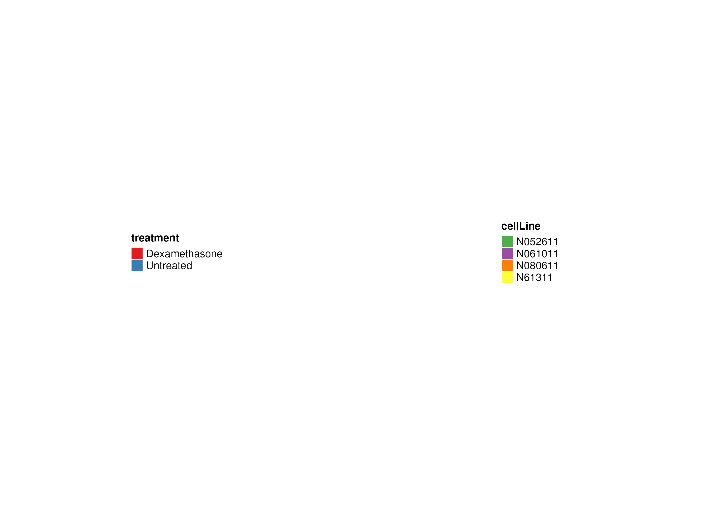
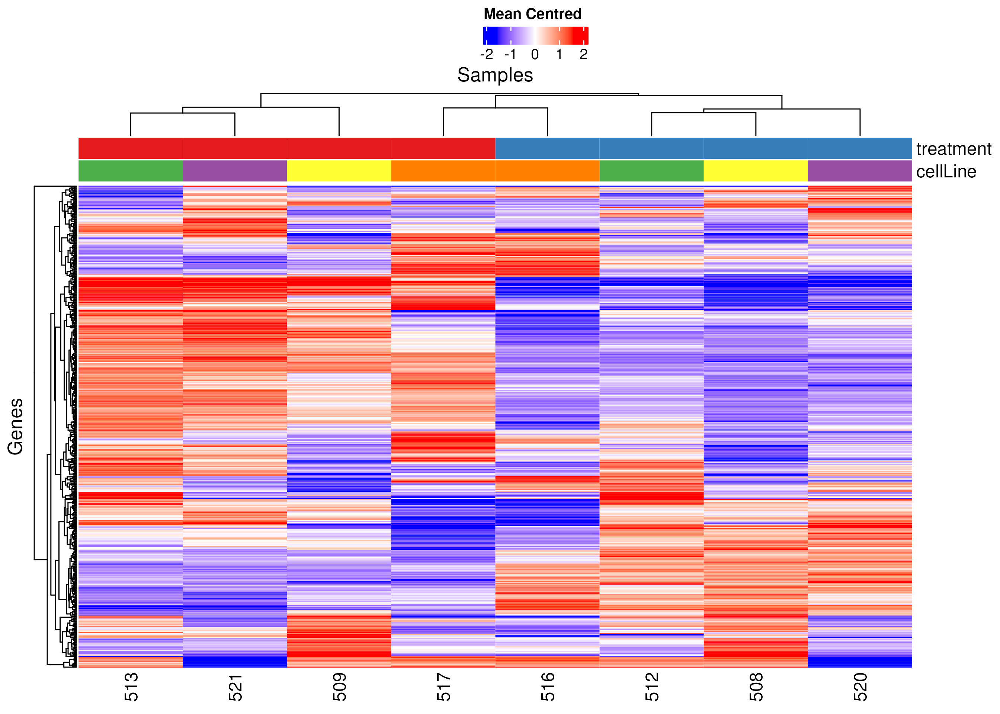
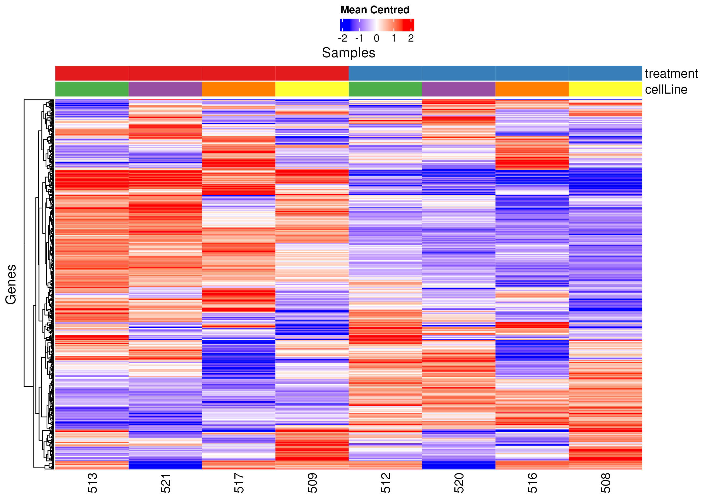
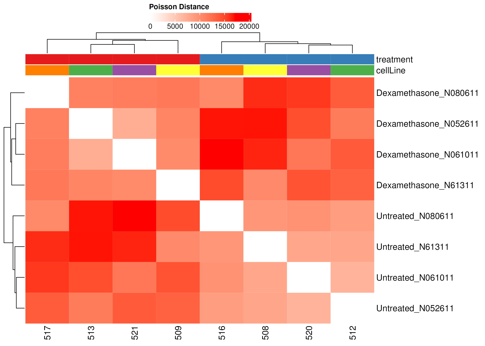

| Setting | Value |
|---|---|
| section | Exploratory analysis |
| res_dir | results/v9.9.9 |
| VERSION | v9.9.9 |
| TAG | _v9.9.9-2-gf95e069_altered |
| staging_dir | staging |
| file_col | ID |
| name_col | sample_name |
| metadata | extdata/metadata_GRCh38.csv |
| counts | extdata/genes.results/GRCh38/ |
| alignment | GRCh38 |
| spec | analyse |
Exploratory analysis GRCh38 analyse
GRCh38
analyse
Exploratory
Exploratory analysis of GRCh38-aligned data according to plan ‘analyse’
1 Preface
We load in all the necessary additional R packages, and set up some initial parameters.
We also have the following defaults set. Whenever they are used or changed in the analysis, that will be highlighted in the text in a table identified with an info icon.
| Option | Value |
|---|---|
Setting analysis parameter
- A random seed of 1 is used to ensure reproduciblity
- Using analysis plan ‘analyse’.
- Using alignment settings ‘GRCh38’
- Use the ‘min’ heuristic to centre the colour-scale
- Use the ‘default’ summary of an LRT ‘effect size’
- Discard transcripts with few average counts per sample than 0
2 Input Summary
The sample annotations are as follows:
| ID | cellLine | treatment | treatment |
|---|---|---|---|
Error in partialise.matrix(mat = mat, cdata = as.data.frame(colData(obj)), : unused argument (mat = mat)We may examine the samples in different combinations, and leave out certain samples. In the above table, the columns under the ‘In Subset’ group indicate these combinations are listed, and the samples’ inclusions are indicated.
Each of those combinations may be analysed in potentially several ways, as formulated here:
3 Models
3.1 treatment
simple
Expression ~ treatment + cellLine
line
Expression ~ cellLine
treatment
Expression ~ treatment
4 Description of Visualisations
4.1 Overall Heatmaps
These visualisations are carried out blind to the experimental design. For the heatmap Figure 2, we select a subset of genes removing the (assumed uninformative) genes with flat expression levels across the whole sample set. We’d expect samples from the same experimental group to cluster together, in the sense that they are on the same branch of the tree. But this is a transcriptome-wide picture, and even if the clustering is not perfect, there will still be genes that are consistent with the expected expression profiles, and they will be revealed in the differential analysis.
In case that heatmap doesn’t cluster exactly according to the experimental design, in Figure 3 we provide the samples ordered according to one particular interpretation of the experimental design. In simple (one-way) designs where there is only one covariate, this is a fairly straightforward way of gathering samples in a set of columns, but in more complex designs it isn’t obvious whether to sort first by genotype and then treatment, say, or perhaps the reverse, so for this ‘supervised’ clustering we chose the (arbitrary) order the ‘model’ was specified, above.
The third heatmap Figure 4 focuses on the pairwise similarity of samples, using a slightly different metric than the first, to emphasise that there’s not one way of calculating how similar two samples are, transcriptome-wide. The colours in the previous heatmaps are a gene’s expression in a sample, relative to its average expression. In this heatmap, colour represents the similarity of each pair of samples.
4.1.1 Focussed Heatmaps
Heatmap ?@fig-01-Heatmap-correct-1 is the first in a series of ‘focussed’ plots. By focussed, we mean that in turn we remove the main effect of some of the covariates, and then also optionally force the tree-structure to respect one of the remaining covariate (samples within the given enforced covariate group are allowed to cluster empirically, and the covariate groups themselves are also clustered at the aggregate level.) Sometimes this allows structures that are masked by one ‘dominant’ effect to emerge, or to remove annoyance effects such as that due to batch which might be preventing the real structure from being apparent. The interpretation of these is very specific to the experimental design. We can alter which covariates split the heatmap, and also which covariates are regressed out before the heatmap is calculated, so please consult with the analyst if you want to change this: the default is that we remove the effect of everything other than the factor being used to colour a specific plot, but this can be changed (e.g. if you just want to see what the result of removing a batch effect looks like, but want to preserve a genotype x treatment composite)
4.2 Principal Component Scatterplots
The come a series of scatter plots of the first two Principal Components - a way of summarising all the genes down to just two ‘metagenes’ that attempt to encapsulate the variability across the samples in as faithful way as possible. Each plot (e.g. ?@fig-01-color-1) takes the PCs from the unadjusted data, and colours them by each of your covariates/treatments in turn.
4.3 Focussed Principal Component Scatterplots
Principal components, just like clusters in the heatmaps, can be driven by a dominant effect that might mask other important effects. So again we have the flexibility to remove systematic effects before recalculating the PCs such as in ?@fig-01-focus-1 . which regress out (‘normalise away’) the effect of a set of covariates. This ‘realigns’ the principal components. We then colour by one of the experimental factors that hasn’t been regressed out, hopefully allowing its effect to emerge, or to diagnose which is causing the clustering. Again, the default is to regress out everything other than the effect being used to colour the plot, but that can (or maybe has been - read the legends to double check!) be customised.
4.4 PC-Covariate assocation
We then revert to the PCA picture that is unadjusted for any covariates. In ?@fig-01-covar-1 the columns explore the lower-order principal components (which although not providing a universally strong signal transcriptome wide, might still detect biology that is affecting a smaller subset of genes, or a reasonably large set of genes to a lesser extent than happens in the higher-order PCS). The rows represent the experimental factors we have recorded, and the depth of colour of the cell records the degree of ‘association’ that factor has with the give PC (and grey says there was no statistically significant association.) This being an automated report, we’ve had to make various compromises so please don’t read too much into this chart: it primarily guides which other plots we should generate to look at how samples associate with each other.
4.5 Partial Residuals of PCAs
We use that information to derive the remaining plots such as ?@fig-01-covariate-1, where we these components in the context of the various experimental factors, producing ‘partial residual plots’ of two selected PCs, being selected by the criteria of: ‘best’ being the PC most strongly associated with the experimental factor; ‘first’ being the highest-order PC associated with the experimental factor; and then resorting to the first and second PCs in the case where we haven’t already generated two plots. ‘Partial residual plots’ are effectively plots of the PC against the experimental factor, where once again we have ‘regressed out’ the effect of all other experimental factors at play.
Setting analysis parameter
- Only use 500 genes for unsupervised clustering
- The value of clustering_distance_rows is euclidean
- The value of clustering_distance_columns is euclidean
- The value of pc_x is 1
- The value of pc_y is 2
5 treatment

5.1 Overall Heatmap of Variable Genes in treatment



Error in partialise.matrix(mat = mat, cdata = as.data.frame(colData(obj)), : unused argument (mat = mat)6 Terms Of Use
The Crick has a publication policy and we expect to be included on publications, regardless of funding arrangements. Any use of these results in publication must be discussed with BABS regarding authorship. If not authorship then the BABS analyst must receive a named acknowledgement. Please also cite the following sources which have enabled the analysis to be carried out.